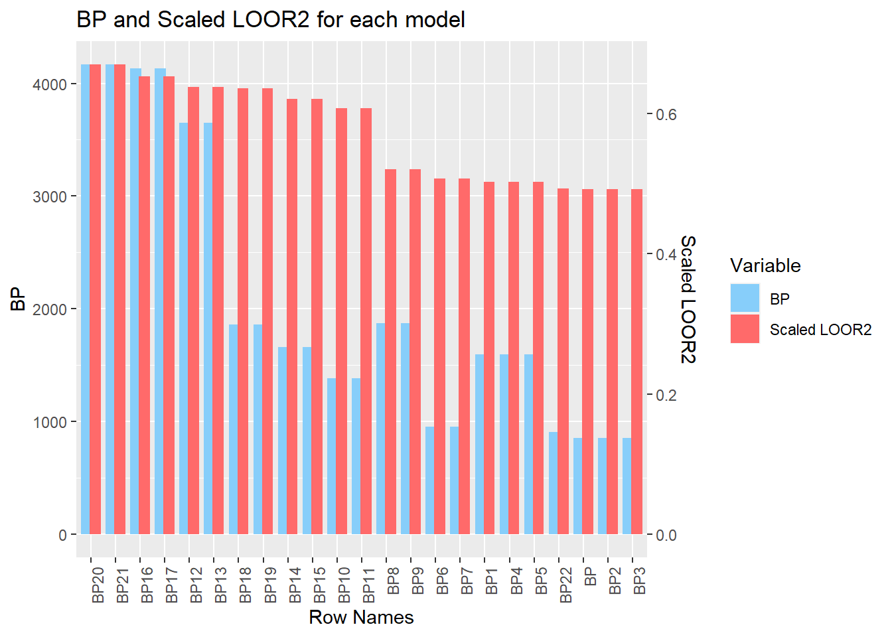

For decades, a secondary education has been considered the gold standard for ensuring a comfortable career and wage. In recent years however, it is becoming more and more difficult for recent graduates to find careers that match up with their major of study, and therefore the wages that go with it. We found this topic important to study due to the prevalence of career prospects in our own lives as well as society at large. Our data is from an inbuilt RStudio package, causaldata, and has 30401 observations, omitting NAs. Our outcome of interest is median income (earnings_med), while our predictors of interest are degree awarded (pred_degree_awarded_ipeds), working (count_working), not working (count_not_working), year, and region. Degree awarded has 3 different observations: 1 being a less-than-two-year degree, 2 being a two-year degree, and 3 being a four-year degree or more. The year variable goes from 2007 until 2014. The region variable is broken down into Northeast, North Central, South, and West.
# all of our packageslibrary(causaldata)
Warning: package 'causaldata' was built under R version 4.3.2
library(datasets)library(tidyverse)
── Attaching core tidyverse packages ──────────────────────── tidyverse 2.0.0 ──
✔ dplyr 1.1.2 ✔ readr 2.1.4
✔ forcats 1.0.0 ✔ stringr 1.5.0
✔ ggplot2 3.4.3 ✔ tibble 3.2.1
✔ lubridate 1.9.2 ✔ tidyr 1.3.0
✔ purrr 1.0.2
── Conflicts ────────────────────────────────────────── tidyverse_conflicts() ──
✖ dplyr::filter() masks stats::filter()
✖ dplyr::lag() masks stats::lag()
ℹ Use the conflicted package (<http://conflicted.r-lib.org/>) to force all conflicts to become errors
library(ggfortify)library(MASS)
Attaching package: 'MASS'
The following object is masked from 'package:dplyr':
select
library(pheatmap)
Warning: package 'pheatmap' was built under R version 4.3.2
library(car)
Loading required package: carData
Attaching package: 'carData'
The following object is masked from 'package:causaldata':
Mroz
Attaching package: 'car'
The following object is masked from 'package:dplyr':
recode
The following object is masked from 'package:purrr':
some
library(lmtest)
Loading required package: zoo
Attaching package: 'zoo'
The following objects are masked from 'package:base':
as.Date, as.Date.numeric
library(splines)library(reshape2)
Warning: package 'reshape2' was built under R version 4.3.2
Attaching package: 'reshape2'
The following object is masked from 'package:tidyr':
smiths
library(interactions)
Warning: package 'interactions' was built under R version 4.3.2
library(boot)
Attaching package: 'boot'
The following object is masked from 'package:car':
logit
library(simpleboot)
Simple Bootstrap Routines (1.1-7)
library(emmeans)# the functions used in multiple placespredict_loo <-function(model) {y <-model.frame(model)[,1]loo_r <-residuals(model) / (1-hatvalues(model))return(y - loo_r)}rsq_loo <-function(model) {y <-model.frame(model)[,1]yhat <-predict_loo(model)return(cor(y, yhat)^2)}p_print <-function(object){print(deparse(substitute(object)))print(object)}as.numeric.l <-function(list){if(is.factor(list)){ list <-as.numeric(list) }return(list)}## cleaning# making region match which region the state is inscorecard$region <- state.region[match(scorecard$state_abbr, state.abb)]# making the degree a factorscorecard$degree <-as.factor(scorecard$pred_degree_awarded_ipeds)scorecard <-na.omit(scorecard)
Research Questions
1. Does median income have a positive relationship with the proportion of working graduates?
\(H_0\): Median income will have a positive relationship with the number of working graduates.
\(H_A\): positive relationship and significant p-value will prove this to be true.
2. Which US region contributes most to median earnings?
\(H_0\): All regions do not differ significantly for median earnings
\(H_A\): Eastern region will be the most significant in median earnings compared to other regions.
3. Which degree length leads to higher median salary?
\(H_0\): Median salary does not significantly differ between degree lengths.
\(H_A\): People with 4 year degrees have higher median salaries compared to other degre
Data Exploration
Manipulate Data
# Organize states into regions scorecard$region <- state.region[match(scorecard$state_abbr, state.abb)]scorecard <-na.omit(scorecard)# Change variable name to 'degree'scorecard = scorecard %>%mutate(degree =as.factor(pred_degree_awarded_ipeds))glimpse(scorecard)
# Plot for Graduate Median Earnings Based on Regionscorecard %>%ggplot(aes(x = region, y = earnings_med, fill = region)) +geom_boxplot() +labs(title ="Graduate Median Earnings Based on Region",x ="Region",y ="Median Earnings" ) +scale_fill_brewer(palette ="Set2") +theme_minimal()
# Plot for Median Earnings Based on Regionscorecard %>%ggplot(aes(x = earnings_med, fill = region)) +geom_histogram(bins =35, col ="black") +facet_grid(~region) +labs(title ="Median Earnings Based on Region",x ="Median Earnings") +facet_grid(~region) +theme_minimal()
Employment Status vs. Median Earnings
# Create a new dataframe with tidy long performed on status of workscorecard1 <- scorecard %>%gather(key ="employment_status", value ="working", c(count_not_working, count_working)) scorecard1 <- scorecard1 %>%mutate(employment_status =as.factor(employment_status))# Plot for Median Earnings of Graduates Based on Employment Statusscorecard1 %>%ggplot(aes(x = working, y = earnings_med, color = employment_status)) +geom_point() +facet_grid(~employment_status) +labs(title ="Median Earnings of Graduates Based on Employment Status",x ="Number of Graduates",y ="Median Earnings") +scale_color_brewer(palette ="Dark2", name ="Employment Status", labels =c("Not Working", "Working")) +theme_minimal() +theme(legend.position ="top") +geom_smooth(method ="lm", linetype ="dashed", color ="black")
`geom_smooth()` using formula = 'y ~ x'
# Plot for Median Earnings of Graduates Based on Employment Statusscorecard1 %>%ggplot(aes(x = earnings_med, fill = employment_status)) +geom_histogram(bins =35, col ="black") +facet_grid(~employment_status) +labs(title ="Median Earnings of Graduates Based on Employment Status",x ="Median Earnings") +scale_color_brewer(palette ="Dark2", name ="Employment Status", labels =c("Not Working", "Working")) +theme_minimal()
Degree Length vs. Median Earnings
# Plot for Median Earnings of Graduates Based on Degree Lengthscorecard1 %>%ggplot(aes(x = degree, y = earnings_med, fill = degree)) +geom_boxplot() +labs(title ="Median Earnings of Graduates Based on Degree Length",x ="Degree Length", y ="Median Earnings") +theme_minimal() +scale_fill_discrete(labels=c('Less than 2 years', 'Two years', '4+ years')) +scale_x_discrete(labels =c('Less than 2 years', 'Two years', '4+ years'))
Year vs. Median Earnings
# changing year to a factorscorecard1$year_level <-as.factor(scorecard1$year)# Plot for Median Earnings of Graduates 2007 - 2014scorecard1 %>%ggplot(aes(x = year_level, y = earnings_med, fill = year_level)) +geom_boxplot() +labs(title ="Median Earnings of Graduates 2007 - 2014",x ="Year", y ="Median Earnings") +theme_minimal()
Correlations
# getting year as a numericscorecard$year_num <-as.numeric(scorecard$year)# getting the heat map for the year, earnings_med, count_not_working, count_workingscorecard_cor <-cor(na.omit(scorecard[,c(5, 6, 7, 8)]))pheatmap(scorecard_cor,treeheight_col =0,treeheight_row =0,display_numbers =TRUE,breaks =seq(-1, 1, length =101))
Multiple Linear Regression Model
To assess for the presence of a predictive relationship between the median earnings of individuals graduating from colleges and universities across the United States and characteristics associated with their alma mater and post college lives, we constructed a linear model regressing median earnings on surveyed universities’ regional location, the number of alumni both employed and not working (not necessarily un-employed), the primary degree awarded, and the year that each survey was conducted.
Call:
lm(formula = earnings_med ~ region + degree + year + count_not_working +
count_working, data = scorecard)
Residuals:
Min 1Q Median 3Q Max
-33245 -5048 -660 3946 130337
Coefficients:
Estimate Std. Error t value Pr(>|t|)
(Intercept) 5.034e+05 4.173e+04 12.06 <2e-16 ***
regionSouth -4.613e+03 1.364e+02 -33.82 <2e-16 ***
regionNorth Central -3.651e+03 1.456e+02 -25.07 <2e-16 ***
regionWest -1.761e+03 1.552e+02 -11.35 <2e-16 ***
degree2 5.892e+03 1.220e+02 48.30 <2e-16 ***
degree3 1.567e+04 1.198e+02 130.82 <2e-16 ***
year -2.359e+02 2.075e+01 -11.37 <2e-16 ***
count_not_working -8.859e+00 2.397e-01 -36.97 <2e-16 ***
count_working 1.555e+00 3.766e-02 41.29 <2e-16 ***
---
Signif. codes: 0 '***' 0.001 '**' 0.01 '*' 0.05 '.' 0.1 ' ' 1
Residual standard error: 8373 on 30392 degrees of freedom
Multiple R-squared: 0.4928, Adjusted R-squared: 0.4927
F-statistic: 3691 on 8 and 30392 DF, p-value: < 2.2e-16
scorecard$region<-relevel(scorecard$region, ref="Northeast")cat("Earnings median range:", range(scorecard$earnings_med))
Earnings median range: 8400 171900
The substantial F-statistic generated by the linear model of 3691 on 8 and 30392 degrees of freedom allowed us to reject the null hypothesis that none of the chosen variables possess any relationship to median earnings (all slopes are equal to zero) in favor of the alternative hypothesis that at least one of the predictive variables influences the earnings of American college graduates (at least one slope is not equal to zero). Given the confirmation of, at minimum, one of our independent variables’ predictive power, we further explored the more nuanced ways in which each contributed to variation from the baseline predicted income of $503,340, as denoted by the intercept regression coefficient. Holding the influence of region, degrees typically awarded, year, and the number of graduates not actively employed constant, a one person increase in the number of gainfully employed graduates contributed to an institution results in a marginal $1.56 increase in predicted median earnings. Conversely, when controlling for the effect of all other predictors, the addition of a single non-working alumni unsurprisingly elicits a predicted $8.86 decline in predicted income. Assessment of the regression coefficient assigned to the year variable in the same manner revealed a slightly more impactful association between the year participants were surveyed and median earnings, with the passage of one year resulting in a loss of $235.90. Due to the categorical nature of the predominant degree awarded by collegiate study participants and the region in which each institution of higher learning resides, the analysis of their influence on predicted monetary outcomes diverged from that of aforementioned variables. As a hub for a variety of prestigious Universities, we anticipated that graduates from Northeastern schools would likely possess the highest median earnings and we accordingly designated it as the reference for our analysis of regional impacts. When controlling for the effects of all other variables and regions, prior attendance of a Southern school resulted in an average median earnings reduction of $4,613 from the Northeastern baseline. Upon similar evaluation, graduation from North Central and Western colleges comparably resulted in an average loss of $3,651 and $1,761, respectively. In considering the impact of the predominant degree awarded we identified the widest range of variation between predicted monetary outcomes, with the reference of less than 2 years differing by ampler amounts than the deviations observed between the regional categories. Controlling for all other variables and education levels, completion of a 2 year degree improved average predicted median income by $5,892, while graduation with a bachelor’s degree raised income by an average of $15,670 after comparison to the baseline. Though all of the regression coefficients for both numeric and categorical variables possessed p-values significant at the zero level (p <2*10-16), the multiple R2 value of 0.498 indicates that only approximately 50% of the variation observed in median earnings for those surveyed is accounted for by the collegiate attributes analyzed above. This is reflected by the substantial residual standard error of 8373 on 30,392 degrees of freedom, meaning that the predicted values produced by the linear model deviate from actual monetary outcomes by an average of $8373. When compared to both the regression coefficients and the overall range of the actual median earnings values ($8604-$171900), the level of error observed in the estimates produced by the model is concerning and likely indicative of improper model fit through overfitting or multicollinearity.
Improving the Model
Setting up to analyze the models
results <-data.frame()analyze_model <-function(model){# testing the if errors zero on-average# closer to zero is good resid_avg_zero_test <-t.test(resid(model), mu=0)# testing for constant variance# closer to zero is better heteroscedasticity_test <-bptest(model)# used for checking for overfitting#higher LOOR2 is better but R2 being much greater than LOOR2 incdicates overfitting LOOR2 <-rsq_loo(model) R2 <-summary(model)[["r.squared"]]# Ensure the types are compatible model_call_str <-as.character(paste(deparse(model$call), collapse =" ")) resid_statistic <-as.numeric(resid_avg_zero_test$statistic) errors_zero_is_pass <-resid_avg_zero_test$p.value > .05 bp_statistic <-as.numeric(heteroscedasticity_test$statistic) constant_variance_is_pass <- heteroscedasticity_test$p.value > .05 loor2_value <-as.numeric(LOOR2) r2_value <-as.numeric(R2)# Append the new row new_row <-data.frame(model=model_call_str, t=resid_statistic, errors_zero_is_pass, bp=bp_statistic, constant_variance_is_pass=constant_variance_is_pass, R2=r2_value, LOOR2=loor2_value)# Making sure that the results are actually getting added results <<-rbind(results, new_row)}
Q: Use diagnostic plots to assess whether any of the assumptions underlying the linear regression model are violated. Are the errors zero on-average for all fitted values? Do they have constant variance? Are the errors normally distributed?
analyze_model(earnings_lm)print(results[NROW(results),]) # !!! TODO reformat this so it is easier to interpret
model
BP lm(formula = earnings_med ~ region + degree + year + count_not_working + count_working, data = scorecard)
t errors_zero_is_pass bp constant_variance_is_pass
BP 2.343518e-14 TRUE 855.6839 FALSE
R2 LOOR2
BP 0.4928242 0.4925416
A: According to the t.test for mean of average zero, the errors do appear to be zero on-average for all fitted values (t is extremely close to 0 which indicates a p-value close to zero and therefore is not significant evidence that the mean varies from zero). According to the Breusch-Pagan test, the errors do NOT have constant variance and are heteroskedastic (bp of 855.68 which would led to rejecting the test which indicates we reject the null hypthosesis / aka reject that it is homoskedastic). The normality is pretyy bad with the points at the higher quantiles doubling the expected ones.
Q: If there are any violations of the usual assumptions, see if you can use a transformation of either the outcome or some/all of the predictors to fix it. Then, reassess the diagnostic plots to see how well you did. (Note: it’s often quite difficult to fix all off the assumptions simultaneously; just do the best you can, with the order of importance being mean-zero, then constant variance, then normality).
log_model <-lm(log(earnings_med) ~ region + degree + year + count_not_working + count_working, data = scorecard)analyze_model(log_model)results[NROW(results),]# !!! TODO reformat this so it is easier to interpret
model
BP1 lm(formula = log(earnings_med) ~ region + degree + year + count_not_working + count_working, data = scorecard)
t errors_zero_is_pass bp constant_variance_is_pass
BP1 -3.335675e-14 TRUE 1597.033 FALSE
R2 LOOR2
BP1 0.5029592 0.5026963
A: Log dependent only transformation. According to the t.test for mean of average zero, the erros do appear to be zero on-average. According to the Breusch-Pagan test, the errors do Not have constant variance however the BP is worse than the previous model. The normality is better than the previous model with qq-plot with the residuals being nowhere as far off.
Q: For one of your numeric predictors, consider replacing the linear term 𝛽𝑗 𝑋𝑖𝑗 with a natural spline using the ns() function from the splines library, and determine if there is evidence supporting the inclusion of a spline. (You may keep or discard to spline part of the model after doing this.)
for(k in1:5){ formula_str <-sprintf("lm(earnings_med ~ region + degree + year + ns(count_not_working, df=%d) + ns(count_working, df=%d), data=scorecard)", k,k) spine_both_model <-eval(parse(text = formula_str))analyze_model(spine_both_model) formula_str <-sprintf("lm(earnings_med ~ region + degree + year + ns(count_not_working*count_working, df=%d), data=scorecard)", k) spine_both_int_model <-eval(parse(text = formula_str))analyze_model(spine_both_model) formula_str <-sprintf("lm(log(earnings_med) ~ region + degree + year + ns(count_not_working, df=%d) + ns(count_working, df=%d), data=scorecard)", k,k) spine_both_model <-eval(parse(text = formula_str))analyze_model(spine_both_model) formula_str <-sprintf("lm(log(earnings_med) ~ region + degree + year + ns(count_not_working*count_working, df=%d), data=scorecard)", k) spine_both_int_model <-eval(parse(text = formula_str))analyze_model(spine_both_model)}
A: none of the splines have a good impact on the model so we will not include one in our model !!!T ODO this is a lie??? because i was being dumb
Q: Hypothesize the existence of an interaction, then check to see if including the interaction is justified on the basis of the data by fitting a model with the interaction.
A: There is likely an interaction between count_not_working and count_working and year
Q: Interpret the interaction, regardless of its statistical significance. (You may keep or discard the interaction after doing this.)
Analysis of Variance Table
Model 1: earnings_med ~ region + degree + year + count_not_working + count_working
Model 2: earnings_med ~ region + degree + (count_not_working + count_working) *
year
Res.Df RSS Df Sum of Sq F Pr(>F)
1 30392 2.1307e+12
2 30390 2.1282e+12 2 2445943783 17.463 2.63e-08 ***
---
Signif. codes: 0 '***' 0.001 '**' 0.01 '*' 0.05 '.' 0.1 ' ' 1
drop1(count_year_int_model, test ="F") # TODO FIX FORMATTING FOR THIS AREA
Single term deletions
Model:
earnings_med ~ region + degree + (count_not_working + count_working) *
year
Df Sum of Sq RSS AIC F value Pr(>F)
<none> 2.1282e+12 549188
region 3 9.2840e+10 2.2211e+12 550480 441.905 < 2.2e-16 ***
degree 2 1.1864e+12 3.3146e+12 562653 8470.653 < 2.2e-16 ***
count_not_working:year 1 2.3133e+09 2.1305e+12 549219 33.033 9.149e-09 ***
count_working:year 1 1.7376e+09 2.1299e+12 549211 24.812 6.354e-07 ***
---
Signif. codes: 0 '***' 0.001 '**' 0.01 '*' 0.05 '.' 0.1 ' ' 1
A: count_not_working:year with 6.179e-01 indicates that the model predicts for every 1 increase in count_not_working that the effect of year will increase 6.179e-01. count_working:year with -7.314e-02 indicates that the model predicts for every 1 increase in count_working that the effect of year will increase -7.314e-02.
# Create a transformation for 'LOOR2'max_bp <-max(results$bp, na.rm =TRUE)max_LOOR2 <-max(results$LOOR2, na.rm =TRUE)scale_factor <- max_bp / max_LOOR2# Apply the unified scaling to both LOOR2 and R2results$LOOR2_scaled <- results$LOOR2 * scale_factor# Update melting to include both scaled LOOR2 and R2long_results <-melt(results, id.vars ="row_names", measure.vars =c("bp", "LOOR2_scaled"))# Update variable names for the legendlong_results$variable <-factor(long_results$variable, labels =c("BP", "Scaled LOOR2"))# Plotggplot(long_results, aes(x = row_names, y = value, fill = variable)) +geom_bar(stat ="identity", position =position_dodge(width =0.7)) +scale_fill_manual(values =c("BP"="#87CEFA", "Scaled LOOR2"="#FF6A6A")) +scale_y_continuous("BP", sec.axis =sec_axis(~ . / scale_factor, name ="Scaled LOOR2")) +theme(axis.text.x =element_text(angle =90, hjust =1)) +ggtitle("BP and Scaled LOOR2 for each model") +labs(x ="Row Names", y ="BP Value", fill ="Variable")

results[1,]
model
BP20 lm(formula = log(earnings_med) ~ region + degree + year + ns(count_not_working, df = 5) + ns(count_working, df = 5), data = scorecard)
t errors_zero_is_pass bp constant_variance_is_pass
BP20 3.750755e-14 TRUE 4167.365 FALSE
R2 LOOR2 row_names LOOR2_scaled
BP20 0.6705142 0.6701226 BP20 4167.365
To begin the project, we wanted to investigate how the number of working graduates (count_working), region of the university (region), and degree type (degree) relate to the median income of graduates (earnings_med). In this section, we tested if each of these three variables are significant in predicting the median income. Firstly, we used the following equation to represent the relationship between median earnings and the chosen predictors: \[
Y = \beta_0 + \beta_{r_1}X_{r_1} + \beta_{r_2}X_{r_2} + \beta_{r_3}X_{r_3} + \beta_{d_1}X_{d_2} + \beta_{d_2}X_{d_2} + \beta_yX_y + \beta_nX_n + \beta_wX_w + \epsilon
\] Where: \(Y\) = earnings_med , \(X_r\) = region, \(X_d\) = degree, \(X_y\) = year, \(X_n\) = count_not_working, and \(X_w\) = count_working Using our final model, earnings_lm, we performed the following hypotheses testing:
Using the p-values from the drop1 function, we see that \(\beta_r\), \(\beta_g\), and \(\beta_w\) are all significant predictors of earnings_med.
drop1(earnings_lm, test ="F")
Single term deletions
Model:
earnings_med ~ region + degree + year + count_not_working + count_working
Df Sum of Sq RSS AIC F value Pr(>F)
<none> 2.1307e+12 549219
region 3 9.3190e+10 2.2238e+12 550514 443.09 < 2.2e-16 ***
degree 2 1.2069e+12 3.3375e+12 562859 8607.45 < 2.2e-16 ***
year 1 9.0561e+09 2.1397e+12 549346 129.18 < 2.2e-16 ***
count_not_working 1 9.5798e+10 2.2265e+12 550554 1366.48 < 2.2e-16 ***
count_working 1 1.1952e+11 2.2502e+12 550876 1704.88 < 2.2e-16 ***
---
Signif. codes: 0 '***' 0.001 '**' 0.01 '*' 0.05 '.' 0.1 ' ' 1
Furthermore, using the summary functions we see that \(\beta_{r_1}\), \(\beta_{r_2}\), \(\beta_{r_3}\), \(\beta_{d_1}\), and \(\beta_{d_2}\) are all significant predictors of \(Y\). We therefore reject H_0 for both region and degree and conclude that median income changes based on the regional location of the college and the type of degree the college offers. Also, we see that there is significant evidence that \(\beta_w\) is positive (which confirms our hypothesis in Part 1). We therefore reject \(H_0\) for count_working variable and conclude that median earnings tend to increase as the number of working graduates increases.
summary(earnings_lm)
Call:
lm(formula = earnings_med ~ region + degree + year + count_not_working +
count_working, data = scorecard)
Residuals:
Min 1Q Median 3Q Max
-33245 -5048 -660 3946 130337
Coefficients:
Estimate Std. Error t value Pr(>|t|)
(Intercept) 5.034e+05 4.173e+04 12.06 <2e-16 ***
regionSouth -4.613e+03 1.364e+02 -33.82 <2e-16 ***
regionNorth Central -3.651e+03 1.456e+02 -25.07 <2e-16 ***
regionWest -1.761e+03 1.552e+02 -11.35 <2e-16 ***
degree2 5.892e+03 1.220e+02 48.30 <2e-16 ***
degree3 1.567e+04 1.198e+02 130.82 <2e-16 ***
year -2.359e+02 2.075e+01 -11.37 <2e-16 ***
count_not_working -8.859e+00 2.397e-01 -36.97 <2e-16 ***
count_working 1.555e+00 3.766e-02 41.29 <2e-16 ***
---
Signif. codes: 0 '***' 0.001 '**' 0.01 '*' 0.05 '.' 0.1 ' ' 1
Residual standard error: 8373 on 30392 degrees of freedom
Multiple R-squared: 0.4928, Adjusted R-squared: 0.4927
F-statistic: 3691 on 8 and 30392 DF, p-value: < 2.2e-16
To further investigate the region and degree variables, we ran the respective constrast functions and found that income significantly varies between all regions as well as between all degree types which confirms our initial hypothesis stated in Part 1.
cat("Comparing median income between regions:", "\n")
contrast estimate SE df t.ratio p.value
Northeast - South 4613 136 30392 33.816 <.0001
Northeast - North Central 3651 146 30392 25.072 <.0001
Northeast - West 1761 155 30392 11.348 <.0001
South - North Central -962 126 30392 -7.644 <.0001
South - West -2852 135 30392 -21.172 <.0001
North Central - West -1890 145 30392 -12.998 <.0001
Results are averaged over the levels of: degree
cat("\n","Comparing median income between degrees:", "\n", sep ="")
contrast estimate SE df t.ratio p.value
degree1 - degree2 -5892 122 30392 -48.304 <.0001
degree1 - degree3 -15673 120 30392 -130.823 <.0001
degree2 - degree3 -9781 128 30392 -76.311 <.0001
Results are averaged over the levels of: region
In conclusion, based on our findings, all of our initial hypotheses seem to be confirmed. The median earnings do seem to increase with the number of graduates that are able to find a job. The earnings also vary based on degree type the graduate received and the geographic region of the US where the college is located. These conclusions do have serious limitations though. Firstly, our model contained only 5 predictors all of which were found to be significant. However, the inclusion of more predictors can affect the trends of the model and change the significance of each of the original 5 predictors. Also, we need to consider the possibility of existence of confounding variables. For example, it is possible that graduates who go to elite colleges are more likely to both find a job and earn a higher wage. Along with this, some regions in the US, like the Northeast, tend to have many states with a significantly higher cost of living which can explain the difference in median earnings. It is also important to account for the fact that we performed multiple tests in this section, hence we adjusted our p-values using the Bonferroni correction. Firstly, for both region and degree variables, we repeated the pairwise comparisons using the Bonferroni adjusted p-values. In both cases, our conclusions did not change.
cat("Comparing median income between regions:", "\n")
contrast estimate SE df t.ratio p.value
Northeast - South 4613 136 30392 33.816 <.0001
Northeast - North Central 3651 146 30392 25.072 <.0001
Northeast - West 1761 155 30392 11.348 <.0001
South - North Central -962 126 30392 -7.644 <.0001
South - West -2852 135 30392 -21.172 <.0001
North Central - West -1890 145 30392 -12.998 <.0001
Results are averaged over the levels of: degree
P value adjustment: bonferroni method for 6 tests
Then, since we tested three separate sets of hypotheses, the resulting p-values had to be multiplied by a factor of 3 to perform the Bonferroni correction. However, in all three cases we ended up with a \(p-value < 2 * 10^{-16}\) so it follows that we still must reject \(H_0\) in all three cases.
Robustness of Results
• Use the function lm.boot in the simpleboot package to compute the bootstrap standard
errors of the regression coefficients. How do these compare in magnitude to the standard
errors from the output of summary? Are there any problems suggested by these standard
All of the coeficents are very closely related and not outside of a magnitude of each other. With the largest change being in degree 2 with a percent change of -2.83. Due to them being closely related, there appear to be no issues suggested by these.
• Use cross-validation to estimate the leave-one-out prediction error.
hip <-as.numeric(row.names(ip))earnings_lm$model[hip,]
earnings_med region degree year count_not_working count_working
8100 45400 Northeast 3 2009 54 399
15075 31100 Northeast 2 2011 151 478
NA NA <NA> <NA> NA NA NA
NA.1 NA <NA> <NA> NA NA NA
• Are there any potential issues with multicolinearity of predictors in your data? Compute variance inflation factors for each of your predictors to assess this.